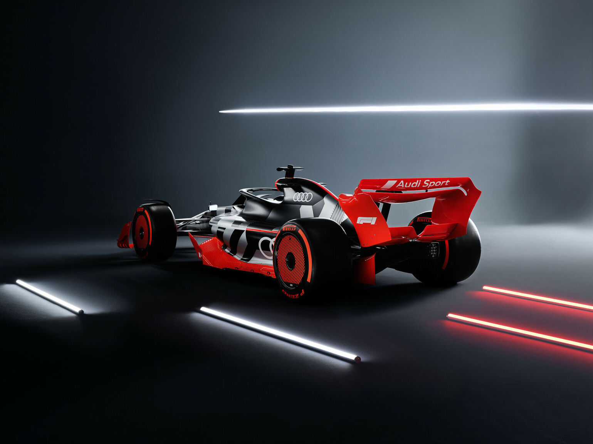
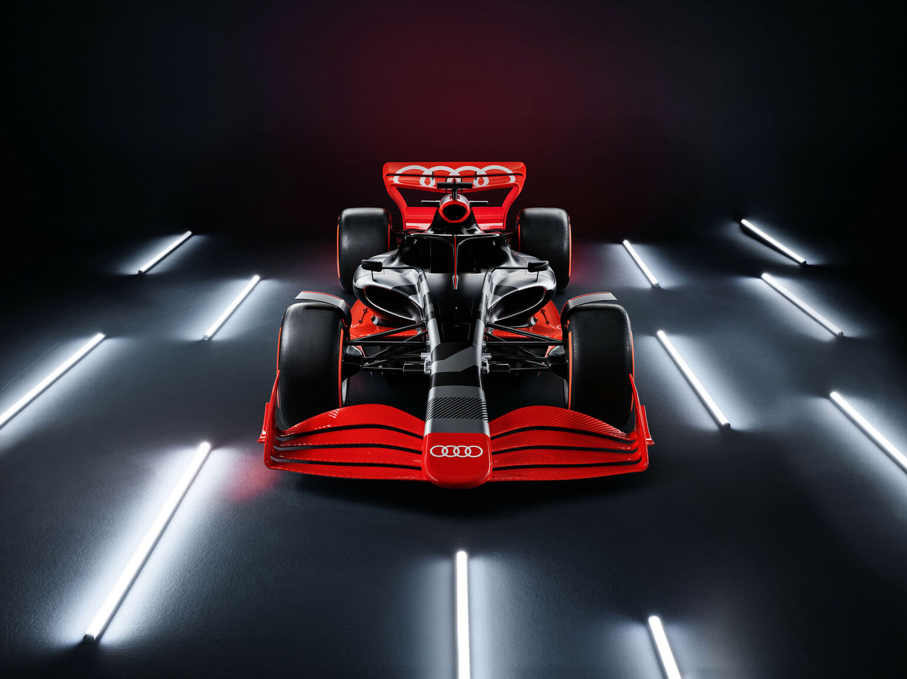

Audi enters Formula 1
- Powertrain development for the top class of motorsport from the 2026 season onwards.
- The hybrid powertrain will be built at Audi Sport's plant in Neuburg an der Donau under the leadership of Adam Baker.
- New rules with an emphasis on sustainability and cost effectiveness - important factors in making the decision
- Change at Audi Sport: Julius Seebach passes the baton to Rolf Michl after a successful restructuring
Active participation in the transformation of Formula 1
Oliver Hoffmann says: "In view of the major technological steps that the series will take in 2026 in order to achieve sustainability, we can talk about a new Formula 1. Formula 1 is being transformed and Audi wants to actively participate in this evolutionary path. The narrow a link between a Formula 1 project and the technical development of AUDI AG will enable synergy."
From 2026 onwards, the share of electric energy in the drive unit, consisting of an electric motor, battery, control electronics and internal combustion engine, will increase significantly compared to today's Formula 1 engines. Then the electric drive will have a power similar to that of the internal combustion engine, which amounts to about 400 kW (544 hp). The high-efficiency 1.6-liter turbo engines will run on sustainable synthetic fuel - another requirement for Audi to participate.
Popularity in key markets and among young target groups
World famous, highly emotional and technologically advanced - Formula 1 meets exactly the requirements of Audi. Formula 1 races are held in all key markets for the brand. As an impressive platform for the world's most advanced electric racing cars, the race is of particular interest to car manufacturers. Audi rises to the challenge of demonstrating Vorsprung durch Technik in this competitive environment.
The great interest in Formula 1 is global; racing series is one of the most watched sporting events in the world. In 2021, the TV audience is over 1.5 billion. In key markets such as China and the USA, Formula 1 is popular and this trend continues to strengthen, also among young target groups. In social media, Formula 1 has the highest growth and is among the most popular sports in the world.
The power unit will be developed at Audi Sport's state-of-the-art technology center for motorsport development in Neuburg on the Danube, not far from AUDI AG's headquarters in Ingolstadt. "For the development and production of the powertrain for Formula 1, we will use the valuable know-how of our motorsport employees, invest further in our motorsport center and hire highly specialized specialists," says Audi Sport managing director Julius Seebach, who is organizing the participation in Formula 1 as part of Audi's reorientation in motorsports.
The Neuburg site on the Danube already has test stands for Formula 1 engines, high-performance electric motors and batteries. Staff expansions, expansion of buildings and technical infrastructure are carried out in order to provide the necessary base for the project by the end of the year. A separate company, a 100% subsidiary of Audi Sport, was recently created for the development of the power unit. The management of the company, and therefore the Formula 1 project, will be taken over by Adam Baker as CEO, who has held various management positions in car manufacturers and motor sports teams.. Before joining Audi in 2021, he worked for three years at the FIA, the international governing body.
Audi will announce the line-up of the team that will compete for the brand in 2026 by the end of the year.
The decision for Formula 1 determines the orientation of motor sports
Audi Sport is concentrating its efforts on the Formula 1 project. It is therefore discontinuing its LMDh project. Development of the sports car intended for endurance racing was halted by Audi Sport recently. In addition to customer sport, Audi Sport will continue its innovation project with the RS Q e-tron in the Dakar Rally. Next year, Audi aims for overall victory in the desert.
Whether it's the World Rally Championship, World Sports Car Championship, American Motorsport, DTM, Le Mans or Formula E - Audi Sport sets standards in numerous motorsport series with numerous titles. "Formula 1 is the next big stage in Audi's motorsport history," says Julius Seebach.
Julius Seebach passes the baton to Rolf Michl
The participation in Formula 1 marks not only the successful completion of the restructuring of Audi Motorsport, but also a decisive chapter of Audi Sport GmbH. Managing Director Julius Seebach will move to AUDI AG on September 1, 2022 and take up a new strategic position in the area of technical development, reporting directly to the Management Board.
Hoffmann, in his role as a member of the Board of Management and Chairman of the Advisory Board of Audi Sport GmbH, thanked Seebach for his achievements: "Julius is a symbol of strategic foresight, consistent action and sustainable results in difficult times." Under his auspices, Audi Sport GmbH repeatedly achieved record sales and profits. The RS model offensive doubled sales and successfully launched the first all-electric RS model - the RS e-tron GT.
In 2020, Seebach further takes responsibility for motorsport at Audi and consistently steers it into the future. Under his leadership, the most complex racing car in Audi's history - the RS Q e-tron for the Dakar Rally - was developed in record time. The RS Q e-tron's successful debut with four stage wins at the Dakar Rally in January was followed by its first overall win at the second Abu Dhabi Rally - the first triumph for an electric car in a desert rally. Entering Formula 1 is the successful completion of his work.
Seebach will be succeeded on September 1 by Rolf Michl, COO Racing at Audi Sport since February. Together with Dr. Sebastian Grams, he formed the management of Audi Sport GmbH. Michal has a degree in business administration and has been a member of the Audi Sport family for many years. After holding various marketing positions at AUDI AG and Audi Sport, in 2016 he took over as head of product marketing for the RS models. After moving to the Sportsline division as Head of Vehicle Development, he returned to Audi Sport GmbH in 2019 as Head of Sales/Marketing. During this time, Michal played a key role in shaping the sports line's portfolio and sales successes. Hoffmann: "Rolf is an authentic leader and brings the necessary motorsport and series experience to this role." In addition to his marketing work, Michel is responsible for the concept and implementation of the Audi Sport TT Cup in 2014
 ＜ Back